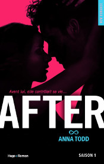

Lecture d’After d’Anna Todd
Le livre After connait un succès sans égal depuis l’année dernière et je voulais savoir pourquoi ^^.
Premièrement, je tiens à préciser qu’avant d’entamer ma lecture, je ne savais même pas qu’il s’agissait d’une fan fiction sur le groupe One Direction (que je ne connais que par le harcèlement de ma petite sœur à ce sujet). Je ne les écoute pas et c’est à peine si je savais à quoi ils ressemblaient (bon, maintenant que ma sœur m’a montré 15 000 photos je sais un peu mieux).
Je vais essayer de ne pas trop spoiler l’histoire, mais je ne vous garantie rien. Si vous ne souhaitez pas savoir ce qui arrive aux personnages, fuyez.
Fuyez, pauvres fous !
Les personnages

Alors, l’idée de l’auteure était de s’inspirer des membres des groupes qu’elle aime. Son personnage principal, rebaptisé Hardin dans la version publiée en France, est censé « être » Harry Styles, chanteur des One Direction. On y retrouve aussi les autres membres du groupe avec des rôles plus ou moins importants. Bon, personnellement, je m’en moque. Ce qui compte pour moi, c’est de ne pas avoir disposé de cette information avant de commencer à lire et d’avoir pu imaginer moi-même chacun des personnages.En effet, il y a de belles descriptions qui permettent facilement de les visualiser et Dieu sait que l’imagination joue un rôle primordial dans la lecture. Ces descriptions sont donc nécessaires et, il faut l’accorder à Anna Todd, bien dosées.
Bien sûr, l’idée de s’inspirer d’un groupe connu était bonne dans le sens où l’auteure a réussit à faire parler d’elle et de son histoire. Il paraîtrait que les chanteurs ne soient pas trop d’accord de l’image qu’elle a véhiculée sur eux, mais bon, ça doit être le cadet de ses soucis vu le succès qu’elle a obtenu.
En tous cas, si vous ne connaissez pas le groupe et que vous avez l’intention de lire ce bouquin, je vous conseille de commencer par là et si vous êtes curieux, de vous renseigner sur ces gars là ensuite. Je trouve que c’est plus savoureux dans ce sens.
L’histoire
L’histoire est longue (beaucoup trop longue). Il s’agit d’une histoire d’amour un peu tordue. Une fille sérieuse et organisée sur ses plans d’avenir (Tessa) rencontre un gars complètement barré (Hardin) qui lui fait perdre la tête. Ils s’entraînent l’un l’autre dans une spirale incessante d’embrouilles, de tromperies et de blessures. Bref, l’intrigue est un peu répétitive et il y avait facilement la possibilité de réduire tout ça d’au moins 2 tomes à mon avis (en France, il y en a 5 !).
Toutes ces histoires pour en venir au fait qu’Hardin est un sale type parce qu’il a eu un passé compliqué et nous faire comprendre que son histoire d’amour va le faire changer. On est donc dans une romance, mais une romance remplie de hauts et de bas (plus de bas d’ailleurs) et il y en a quand même un peu trop.
Il y a aussi un côté érotique, comme la mode le veut en ce moment. La fin du livre (ATTENTION SPOILER) est vraiment déstabilisante. Bien sûr, le lecteur est frustré (il l’est toujours à un moment donné) et certains personnages deviennent très irritants et carrément fatigants à cause de leurs décisions ahurissantes. Du coup, on attend quand-même une certaine fin, un certain revirement. Il arrive, rassurez-vous, mais alors pas du tout comme on l’attend.
Ça peut paraître intéressant de surprendre le lecteur, mais pour ma part, ça n’a pas été dans le bon sens. Hey oui, la fin est assez décevante en fait. On saute plusieurs années dans l’épilogue, à de nombreuses reprises, et au final on a complètement perdu le compte, on ne sait plus quel âge ont les personnages (sans devoir compter comme des dingues) et on a du mal à les imaginer (alors qu’on a passé 5 tomes à le faire !). Et puis l’auteure a clairement voulu écrire un happy end en se disant : « Oui, mais il faut quand-même nuancer, car j’ai inséré des malheurs au cours de l’histoire et il ne faut pas que je les oublie ! ». C’est dommage.
D’un point de vue littéraire
Sans trop m’avancer et en essayant de ne pas m’attirer les foudres de nombreux fans et autres lecteurs intéressés, je voudrais donner mon avis sur ce style de livre.
L’histoire est prenante, quoique bien trop chargée en fouillis comme je l’ai dis plus haut, il est donc facile de lire le bouquin du début à la fin (presque sans interruptions) parce qu’on veut connaître le dénouement.
En revanche, le style n’est pas vraiment bon. Je l’ai déjà constaté dans d’autres fan fictions (comme Cinquante nuances de Grey de E.L. James).
Dans After, la narration est interne (à la première personne), si bien que l’on voit l’histoire à travers les yeux des deux personnages principaux. Forcément, comme ils sont jeunes (18 et 21 ans) et qu’ils ont eu des éducations différentes, leur vocabulaire et leur style ne peuvent pas être parfaits, mais ils peuvent être soignés. Là, ils ne le sont pas. Je peux facilement concevoir qu’il y ait de nombreuses expressions « orales » si on peut dire, avec le vocabulaire associé (notamment pour Hardin qui ne se soucie jamais de soigner son langage), mais on aimerait bien qu’il y ait moins de répétitions qui alourdissent considérablement le récit jusqu’à nous faire fermer le livre pour prendre l’air parce qu’ils nous ont soulés !
Ce qui me chagrine vraiment, c’est que Tessa et Hardin sont tous les deux de grands amateurs de littérature anglaise. Ils en sont à se comparer à des personnages de Jane Austen ou à citer Hemingway, mais les mots qui sortent de leur bouche sont inappropriés. Ça m’a déçu. Bien sûr, le style ne peut pas être parfait non plus, il ne le doit pas même. Mais il manque un certain travail d’écriture de la part de l’auteure. On dirait presque que c’est de l’écriture automatique.
J’espère ne pas la blesser en disant ça, parce que j’imagine qu’elle a quand même dû travailler son récit, mais bon, on ne peut pas nier que de nos jours, la littérature n’est plus ce qu’elle était. Quelque part, c’est triste, même s’il faut accepter que les choses changent.
Mais qui suis-je pour juger (« l’œuvre du Tout Puissant ») ^^ ?
Voilà pour mon avis sur After. Et vous, vous l’avez lu ? Qu’en pensez-vous ? Êtes-vous attaché·e aux personnages ?